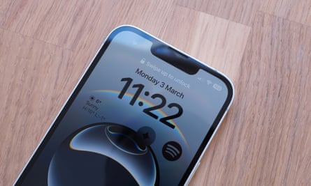
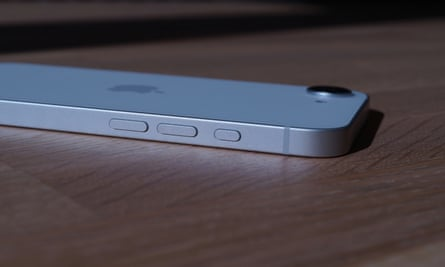
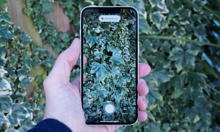
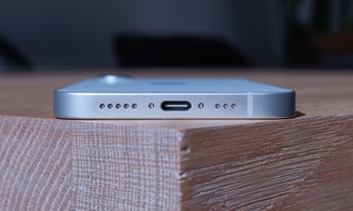
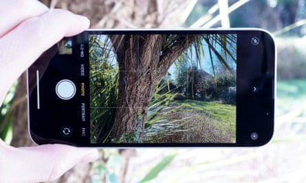

Apple’s cheapest new smartphone is the iPhone 16e, which offers the basic modern iPhone experience including the latest chips and AI features but for a little less than its other models.
The iPhone 16e costs £599 (€699/$599/A$999) and is the spiritual successor to the iPhone SE line . Where the iPhone SE still had the old-school chunky design with home button, the 16e has the body of the iPhone 14 with the chips of the £799 iPhone 16.
That means the 16e has an all-screen design and aluminium body. It was great for the iPhone 14 and still is good today. The phone is light and relatively compact. The 6.1in OLED screen is good and big enough for most uses, but isn’t as bright as that on the standard iPhone 16 .
The 16e has the old-style Face ID notch at the top of the screen rather than the newer “Dynamic Island” used in the rest of the recent iPhone line up.Photograph: Samuel Gibbs/The Guardian
The 16e is only available in black or white, and while it has the handy action button that replaced the mute switch of older iPhones, it doesn’t have the camera control button from the rest of the iPhone 16 line .
The whole of the 16e has these little compromises from the standard iPhone 16 experience. It has a new more power-efficient Apple 5G modem – a first for an iPhone – but only has wifi 6 not the latest wifi 7. The 16e also lacks Thread and Ultra Wideband radios, the latter of which is used for Apple’s precision finding of lost items and other systems.
The action button replaces the mute switch from older iPhones and can be used to turn on the torch, launch the camera or various other features.Photograph: Samuel Gibbs/The Guardian
Even the 16e’s A18 chip is slightly inferior to that used in the regular iPhone 16, lacking some graphics power and performing a little slower overall. It is still a very snappy chip, however.
The phone has wireless charging, but lacks Apple’s excellent MagSafe magnetic attachment technology on the back that has been an iPhone staple since 2020 . MagSafe enables a range of magnetic accessories, from wallets and phone grips to car phone mounts and chargers, none of which work with the 16e, making it a very odd omission.
Whether all these small minuses matter depends on your usage, whether your family has accessories that use MagSafe, wifi 7 at home or a bunch of Apple’s AirTags. But at least the 16e has great battery life lasting a solid 52 hours of general usage between charges across a range of conditions – four hours longer than the regular iPhone 16. That means needing to plug it in every two days or every other day with heavy usage.
The 16e has a range of Apple Intelligence features, including the new visual intelligence system using the camera to identify objects, but most of them are not terribly compelling.Photograph: Samuel Gibbs/The Guardian
Specifications
- Screen: 6.1in Super Retina XDR (OLED) (460ppi)
- Processor: Apple A18
- RAM: 8GB
- Storage: 128, 256 or 512GB
- Operating system: iOS 18
- Camera: 48MP rear; 12MP front-facing
- Connectivity: 5G, wifi 6, NFC, Bluetooth 5.3, USB-C, Satellite and GNSS
- Water resistance: IP68 (6 metres for 30 mins)
- Dimensions: 146.7 x 71.5 x 7.8mm
- Weight: 167g
Sustainability
The iPhone 16e charges to 50% in 26 minutes and hits full power in 96 minutes using a 20W or higher USB-C power adapter (not included).Photograph: Samuel Gibbs/The Guardian
Apple says the battery should last in excess of 1,000 full-charge cycles with at least 80% of its original capacity and can be replaced for £95 . Out-of-warranty screen repairs cost £225 . The 16e has repair guides available and was awarded seven out of 10 for repairability by specialists iFixit.
It contains more than 30% recycled material including aluminium, cobalt, copper, glass, gold, lithium, plastic, rare earth elements, steel, tin and tungsten. The company breaks down the phone’s environmental impact in its report. Apple offers trade-in and free recycling schemes, including for non-Apple products.
Camera
The camera app is the same as other iPhones, but lacks a 0.5x zoom, macrophotography and some more advanced features.Photograph: Samuel Gibbs/The Guardian
One feature that has been cut which makes more of a difference is in the camera department: the 16e only has one 48MP camera on the back, not the two or three present on other iPhones.
The single main camera can manage a 2x in sensor zoom for a form of telephoto shots, but there is no ultrawide camera. Most of the time I didn’t miss it terribly as the main camera shoots great images across a range of lighting conditions. But on occasions where you can’t step back, you can no longer get the shot.
Its portrait mode is slightly less effective, while a lack of a macrophotography mode and the new advanced photographic styles from the main iPhone 16 is a shame. It has the same 12-megapixel selfie camera as the rest of the iPhone line up.
Overall the camera is solid, but if you’re at all interested in photography the 16e isn’t the model for you.
Price
The iPhone 16e costs from £599 (€699/ $599 / A$999 ) with 128GB of storage.
For comparison, the iPhone 16 costs £799 , the iPhone 16 Plus costs £899 , iPhone 16 Pro costs £999 , the iPhone 16 Pro Max costs £1,199 , the Google Pixel 8a costs £499 and the Samsung Galaxy S24 FE costs £549 .
Verdict
The iPhone 16e is a solid phone that offers most of the core iPhone experience with a few things left out for a lower cost.
Many of these things, such as slower wifi, a slightly less powerful chip, no camera control button and an older-style notch probably don’t matter much to most people. But the lack of MagSafe and only a single camera on the back may be deal breakers for some.
The advantage the 16e has over the iPhone 15 and older, cheaper models still available from third-party retailers is the Apple Intelligence features, some of which are useful but many are underwhelming or bettered by third-party apps.
The biggest problem with the 16e is its price. Though it costs about 25% less than a regular iPhone 16, £599 is still very much at the premium end of the market. That makes the 16e only a sensible choice for someone who wants the absolute cheapest new iPhone available and won’t settle for anything else. For everyone else there are better models to be had either new from third-party retailers or refurbished.
Pros: fast, decent screen, great size, action button, USB-C, great battery life, long software support, Face ID, Apple Intelligence. Cons: single camera only and no macro mode, no camera control button, old-style screen design, no MagSafe, no wifi 7, no Thread or UWB, AI features hit and miss, still expensive.